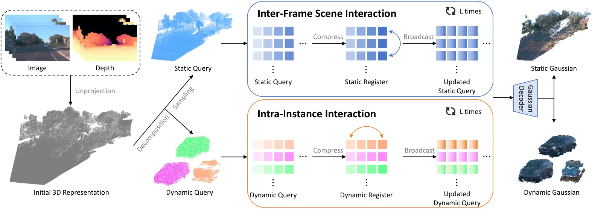
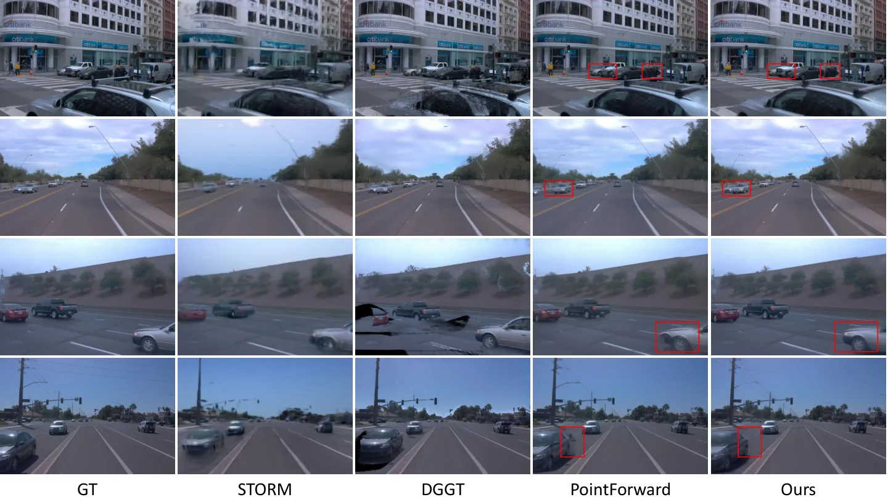
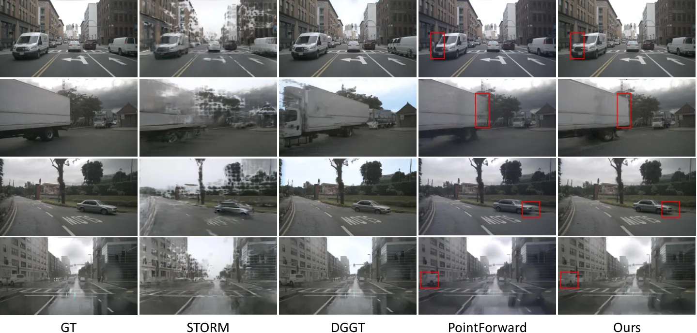
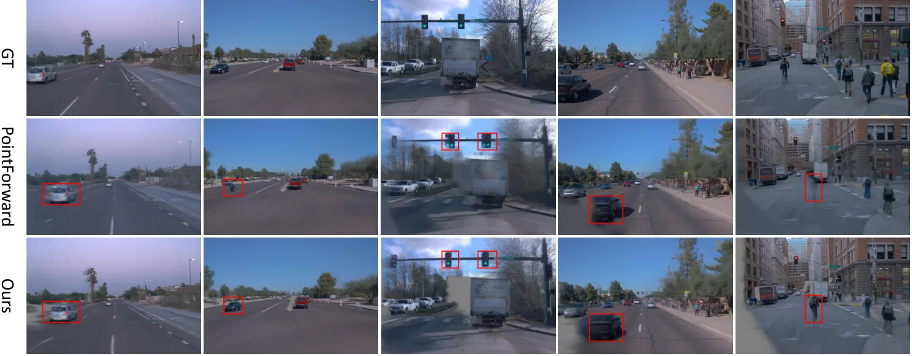

PointForward V2：把“点对齐表示”推进到“点对齐交互”的前馈驾驶场景重建
PointForward V2: Point-Aligned Interaction for Feedforward Driving Reconstruction
在 PointForward 的稀疏 3D 查询表示上，把“信息如何交换”重新设计成 compress–communicate–broadcast：寄存器先从本帧静态查询压缩出场景摘要，寄存器之间做自注意力完成跨帧通信，再把上下文广播回点查询；动态实例则各自在自己的规范空间内用独立寄存器交互，互不串味。4D RoPE 只加在点一侧的 query–register 交叉注意力上，空间用对齐坐标、时间用原始时间戳。Waymo 全图 PSNR 28.48→29.88，动态区域 D-RMSE 6.07→3.99；nuScenes 零样本 +1.83 dB，Argoverse 2 零样本 +0.99 dB；去掉全部注意力会掉到 21.42 PSNR。
作者、单位与技术谱系 · Research context
作者与单位
研究脉络
- PointForward（Chi, Wang, Luo 等, arXiv 2605.11594, 2026）团队前作/方法基座关系：本篇直接继承其点对齐稀疏 3D 查询、物体规范空间与高斯解码，只把“查询如何聚合证据”换成“查询之间如何交互”。[论文第 1 节与参考文献 [8]]
- VGGT-Ω 的 compact register tokens方法上游关系：提供“把跨帧通信限制在紧凑 register 上”的技术范式；本文的推进是把通信瓶颈按驾驶场景的静态/动态结构拆成两类。[论文第 2 节与参考文献 [32]]
- Perceiver / Set Transformer / Agent Attention 的代理 token 路线问题上游关系：这些工作确立了“用少量代理 token 降低全局注意力复杂度”的可行性，本文沿用其复杂度动机但替换了分组方式。[论文第 2 节与参考文献 [10][12][13][17][23]]
合作网络
- 小米汽车与北京市智能驾驶基础模型与仿真重点实验室Xiaomi EV → Beijing Key Laboratory of Intelligent Driving Foundation Models and Simulation关系：共同署名/联合挂靠[arXiv v1 TeX 源作者块]
- 华中科技大学与小米汽车团队Xin Yang / Xianqi Wang（HUST） → Xiaomi EV 团队关系：共同署名[arXiv v1 TeX 源作者块]
- 香港科技大学（Junda Cheng）Junda Cheng（HKUST） → Xiaomi EV 团队关系：共同署名[arXiv v1 TeX 源作者块]
- PointForward-V2 官方代码论文 → github.com/Windsrain/PointForward-V2关系：官方代码[论文摘要中的代码链接]
作者单位、共同第一作者、项目负责人与通讯作者标记均取自 arXiv v1 的 main.tex 作者块与脚注，属事实。与前作 PointForward 的作者重叠、与 VGGT-Ω 的技术关系是基于参考文献与正文自述的解读，未推断导师或师生关系。
方法本质拆解 · What actually changed
是不是微调？
是在驾驶数据上训练的前馈模型：8 张 H20、batch 8、AdamW + cosine，输入 512×768、20 帧片段取 4 帧上下文，图像编码器用 ImageNet 预训练 EfficientNetV2-S，其余查询/寄存器/解码器均为可训练新模块。论文没有说明是否从 PointForward 的权重初始化，这一点待核验；跨数据集实验区分了零样本与在目标数据上微调两种设置。
有没有额外约束？
输入侧需要相机位姿（用于把观测提升到世界系与物体规范空间）与初始深度图，动态实例还需要物体级位姿 T 来做规范化；损失是 RGB 重建 + 深度 + LPIPS 三项加权（λ_depth=1、λ_lpips=0.05），没有额外的几何一致性或时序正则。结构上的硬约束是“点查询之间不直接注意”，所有跨帧信息必须经寄存器中转。
推理/后端到底做了什么？
单次前向：提升查询 → 4 个交互块（压缩/通信/广播）→ 共享高斯解码器每个查询出 4 个高斯 → 直接光栅化渲染 RGB。没有逐场景优化、没有 BA、没有测试时适配；动态高斯在规范空间预测后按目标时刻位姿变换到世界系，靠时间寿命项调制不透明度。
方法本质是什么？
本质是把“全连接注意力”换成“按场景结构分组的瓶颈通信”：静态用逐帧寄存器承载跨帧共享背景，动态用实例寄存器把交互限制在同一物体内，从而在保持信息可达的同时把成本从点数平方降到点数乘寄存器数。它没有改变点对齐表示本身，也没有引入显式几何优化或位姿估计；改善的是同一表示内部的信息流动效率与动态区域的一致性。
输入多视角多帧图像与位姿 → 在稀疏 3D 点查询之间插入静态/动态两类 register 做压缩-通信-广播 → 用 4D RoPE 区分对齐空间与原始时间 → 单次前向解出更一致的静态背景与更准的动态高斯，渲染 PSNR 与动态 D-RMSE 同步改善。

结论与问题Conclusion & Motivation
核心结论
PointForward V2 的出发点是：点对齐只决定了“信息存在哪里”，并没有让点与点之间交换信息。作者不改表示，而是补交互层：静态查询经逐帧 Static Scene Registers 压缩、跨帧自注意力通信、再广播回点；动态实例在各自的物体规范空间内用专属 Dynamic Instance Registers 做实例内交互。这样既避免了 T·N_s 个点查询之间的平方复杂度，又尊重驾驶场景“共享静态背景 + 若干独立运动实例”的组合结构。Waymo 上全图 PSNR 从 28.48 提到 29.88、动态区域 D-RMSE 从 6.07 降到 3.99（降 34%），nuScenes 与 Argoverse 2 的零样本与微调设置也一致提升。
动机与问题
PointForward 的每个查询靠自己把 3D 位置投回各视角、采样特征再融合，因此空间或时间上相关的两个查询无法直接交换互补的几何与外观线索，例如同一面墙在不同帧的观测无法互相校正。最直接的办法是对全部点查询做全局自注意力，但驾驶场景动辄数万查询，二次复杂度不可接受。已有工作用代理 token（Set Transformer 的 inducing points、Perceiver 的 latent array、TokenLearner、Agent Attention、VGGT-Ω 的 register）来降低通信成本，但直接把代理机制搬过来会忽略驾驶场景的两个结构事实：静态背景跨帧共享同一世界坐标系，动态实例彼此独立、且已在物体规范空间里对齐。本文的问题因此是“如何在尊重这种组合结构的前提下，让点对齐查询高效交互”。
方法Method
方法总览
先把图像观测提升为点对齐查询：每个观测带 3D 位置 x、RGB 颜色 c、图像特征 f、Plücker 射线 r 与时间戳 τ，经 φ_init 融合成查询 q。动态观测的位置用 T 的逆变换到物体规范空间，但时间戳与 Plücker 射线保留，从而“几何对齐、来源可追”。随后是 L=4 个场景结构化寄存器交互块：静态分支每帧实例化 R_s 个寄存器，先压缩（寄存器对查询做交叉注意力）、再对拼接的跨帧寄存器做自注意力、最后把上下文广播回点查询；动态分支对每个实例 k 独立执行同样三步。更新后的查询经共享高斯解码器输出 M=4 个 3D 高斯（位置与颜色都是相对采样观测的残差），静态高斯在世界系、动态高斯在规范空间再按目标时刻位姿变换到世界系。
关键技术细节
复杂度是这套设计的直接动机：对 T·N_s 个静态查询做全局注意力是 O((TN_s)²)，本文是 O(TN_sR_s + (TR_s)²)，动态侧为 O(KN_dR_d + KR_d²)，当 R_s 远小于 N_s 时差距巨大。4D 位置编码用 RoPE 的 4D 扩展，把空间坐标与时间戳四个分量分配到每个注意力头的不同通道组，并且只加在点一侧：压缩时对 K 施加旋转、广播时对 Q 施加旋转，寄存器自注意力不加位置编码（寄存器本身不对应明确几何位置）。这样三条线索被分开：对齐坐标编码交互几何、时间戳保留时间来源、Plücker 射线保留观测视角来源。另一个细节是“点查询之间从不直接互相注意”，跨帧通信全部由寄存器中转，这保证了通信成本与点数解耦。

实验Experiments
实验设置
训练在 8 张 NVIDIA H20 上，全局 batch size 8，AdamW + cosine 学习率；数据是 Waymo 三路前视相机的 20 帧片段，4 帧作为上下文视角，输入缩放到 512×768，图像编码器为 ImageNet 预训练 EfficientNetV2-S，输入深度沿用 PointForward 的设置。超参：N_s=65,536、N_d=4,096、R_s=256、R_d=16、L=4、M=4、λ_depth=1、λ_lpips=0.05。评测在 Waymo、nuScenes、Argoverse 2 三个驾驶数据集的未见视角重建上做，指标为 PSNR、SSIM 与动态区域/全图的 D-RMSE，为跨方法公平比较统一缩放到 384×576（Waymo）后计算。对照含逐场景优化方法（EmerNeRF、3DGS、PVG、DeformableGS）与前馈方法（LGM、GS-LRM、Depth Anything 3、AnySplat、STORM、DGGT、PointForward）。
实验数字与比较
Waymo（表 1）：全图 PSNR 29.88 对 PointForward 28.48、DGGT 27.41、STORM 26.38；全图 D-RMSE 2.89 对 3.35；动态区域 PSNR 25.81 对 25.01、D-RMSE 3.99 对 6.07（DGGT 6.55、STORM 7.50）。跨数据集（表 2）：nuScenes 零样本 28.37 对 PointForward 26.54（+1.83 dB），微调后 29.22 对 27.50；Argoverse 2 零样本 26.49 对 25.50（+0.99 dB），微调后 28.63 对 27.66。消融（表 3）：去掉全部注意力 21.42 PSNR / D-RMSE 7.56；只保留 query–register 交叉注意力（去寄存器自注意力）28.78；去掉 4D RoPE 29.58 / D-RMSE 2.90；完整 29.88 / 2.89。容量（表 5）：寄存器 128/8→29.31、256/16→29.88、512/32→29.68；查询 16,384/1,024→28.61、32,768/2,048→29.21、65,536/4,096→29.88。每查询高斯数（表 4）：1→28.62、2→29.46、4→29.88、8→29.67。
消融/失败边界
消融给出的因果链比较清楚：交互本身贡献最大（29.88→21.42，掉约 8.5 dB），其中 compress–broadcast 这一条 Q→R→Q 通路就恢复了大部分（28.78），寄存器自注意力再补约 1.1 dB；4D RoPE 只值 0.30 dB，但方向一致。容量实验显示寄存器是“够用即止”的瓶颈：128/8 到 256/16 有增益，512/32 反而略降；点查询数量则持续有效，说明可以用更密的点而不必同步放大交互 token。失败边界有三条：其一，寄存器预算在全部场景与实例上固定，小物体多、实例密集的场景可能出现寄存器不够分；其二，方法只在驾驶域验证，作者明确承认迁移到更一般的动态环境是未完成的工作；其三，也是最重要的，改动之一是“直接渲染 RGB 高斯”而不是先渲染特征再卷积细化，作者据此论证外插视角不会产生图像空间幻觉式补全，但这条结论只有图 5 的定性证据，没有外插视角的定量指标。
局限与迁移Limitations & Transfer
局限与待核验
作者明确承认两点：固定的查询与寄存器预算，以及实验仅限大规模自动驾驶数据，扩展到更多样的动态环境与重建设置仍是未来工作。我们的待核验项：一是论文没有报推理时延、显存与训练时长，所谓“scalable”目前只有复杂度表达式支持，实际吞吐待测；二是没有说明是否从 PointForward 的权重初始化，8 张 H20、batch 8 的配置下从零训练的收敛性与复现成本未知；三是动态区域的 D-RMSE 改善很大（6.07→3.99），但没有给出动态实例的分类型结果（行人/车辆/骑行者），无法判断增益是否集中在某一类；四是代码虽已给出仓库地址，但未核验是否包含训练脚本与预处理；五是所有指标都是渲染指标，缺少对几何误差（如深度或点云 Chamfer）与位姿的评估。
与你研究路线的关系
这套“按场景结构分配通信带宽”的思路可以直接迁移到多传感器融合：静态背景跨帧共享、动态实例各自成组，正好对应你处理动态场景时“背景做全局优化、动目标单独建模”的分解习惯，而且它把通信成本从点数平方降到与寄存器数相关，适合上车载实时系统。第二个可迁移点是把时间戳与对齐坐标分开编码——这对多帧/多传感器异步观测很实用，可以在不改网络主体的情况下让注意力知道“空间同位置但时间不同”。第三个是能力边界的检查方式：作者用“去掉全部注意力掉约 8.5 dB、只留压缩广播恢复大部分”来证明瓶颈在交互而非容量，这种逐步拆解可以直接套用到你评估任何 register/bottleneck 设计。下一步实验建议：在你自己的序列上固定查询数、只扫寄存器数，画出“质量—显存—时延”三维曲线，确认瓶颈位置；再补一组动态实例分类别的 D-RMSE，看增益是否只来自大目标。





